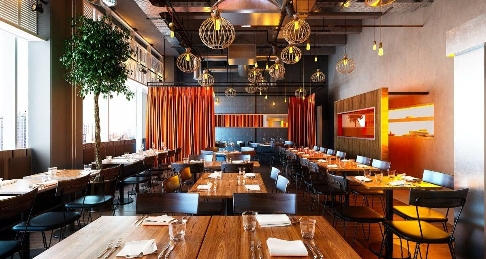
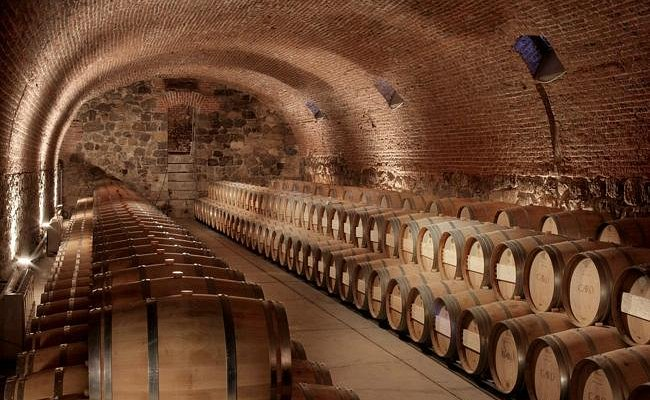
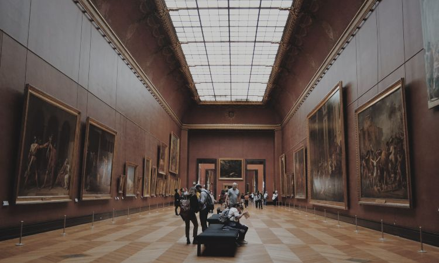

Gastronimia |
Restaurante |  |
| Sidrerias y asadores | ||
| Bodegas de vino y txalcoli | ||
|  | ||
| Productos tipicos | ||
| Escuelas de hosteleria | ||
Cultura |
Archivos y bibliotecas |  |
| Museos | ||
| Palacios de Congresos | ||
| Ferias de Muestras | ||
Ocio |
Entretenimiento y Diversion | |
| Ocio Cultural | ||
| Excursiones y deporte |